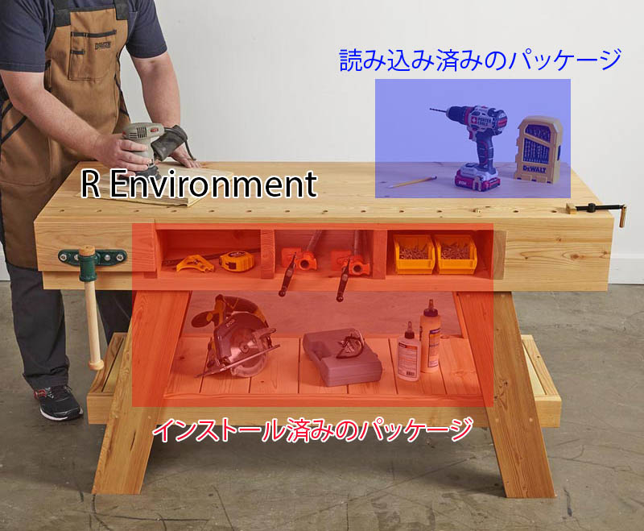

5 Rパッケージ
5.1 パッケージとは
Rには様々な関数 (functions) が提供されている。平均値を求めるmean()、合計を求めるsum()、線形回帰分析を行うlm()、平均値の検定を行うt.test()などがあり、全てを列挙することはできない。しかし、データ分析の技術は日々発展し、Rがデフォルトで提供する関数では不可能ではないが、かなり長いコードが必要な分析を使わざる得ないケースもあろう。Rは開発元だけでなく、誰でも関数を作ることができる。通常なら数百行のコードが必要な分析を一行のコードで実行可能とする関数を多くのRユーザーが作ってきた。これらの関数を集めたのがパッケージである。Rにはグラフ作成に特化したパッケージ、機械学習に特化したパッケージ、テキスト分析に特化したパッケージなど、数千のパッケージが開発されている。このパッケージの豊富さがRの最大のメリットでもある。誰かが新しい分析手法を提案したら、数日内、あるいはその手法が論文として出版される前からRパッケージとして公開されるケースが多い。
本章ではパッケージをインストールし、読み込む方法について説明する。また、パッケージの管理をアシストするパッケージ、{pacman}の使い方についても紹介する。
5.2 パッケージのインストール
Rの環境は何かを作るための作業台に似ている。作業台にはモノを作るために材料だけでなく、工具・道具セットなども置いたりもする。この作業台がRにおける「環境 (environment) 」であり、材料がベクトルや行列、データフレームなどのデータ、工具セットがパッケージになる。データについては後で説明するとし、ここではパッケージについて考えたい。
モノを作るためには素材・材料だけでは不十分だろう。多くの場合、なんらかの道具セットが必要となる。Rには既にいくつかの必須道具セットを用意されているが、他にも様々な道具セットがある。そして、これら道具セットには、一般的に複数の道具が含まれている。一つ一つの道具のことを、ここでは「関数 (function) 」と呼ぶ。これらの道具セットを購入し、作業台の収納に入れておくことがパッケージをインストールすることである。
これらのパッケージは基本的にCRANというRの公式道具屋からダウンロード・インストールされる。もう一つの大きな道具屋としてはGitHubがある1。GitHubは個人経営の道具屋が集まっているモールのようなものである。GitHub道具屋を使用するためには、予めCRANから{devtools}、または{remotes}というパッケージをインストールしておく必要がある。
ここでは{devtools}というパッケージをインストールしてみよう。{devtools}はCRANに登録されているため、install.pcakges()関数でインストールできる。パッケージ名を"で囲むことを忘れないこと。
もし、CRANに登録されていないパッケージをGitHubからインストールするなら、{devtools}パッケージ、または{remotes}のinstall_github()関数を使う。
たとえば、筆者 (Song) が作成しました{BalanceR}パッケージがインストールしたいなら、以下のように打つ。
ここでJaehyunSongはSongのGitHub IDであり、BalanceRはパッケージ名である。
5.3 パッケージの読み込み
先ほど述べたように、パッケージのインストールは道具セットの購入と収納に似ている。ただし、実際に道具セットを使うためには、それを自分の作業台上に載せた方が効率がいいだろう2 3。この作業がパッケージの読み込み (load) である。インストールしたパッケージを読み込むにはlibrary()またはrequire()関数を使う。require()は関数内に使う目的で設計された関数だが、パッケージを読み込むという点では全く同じである。

読み込まれたパッケージはセッションが開かれている時のみに有効である。一通りの作業が終わり、作業部屋から退出すると、作業台上の道具セットは収納に自動的に戻される。つまり、RまたはRStudioを閉じると読み込まれたパッケージは自動的に取り外されるということである。しかし、作業の途中に読み込んだパッケージをセッションから取り外したい時があるかも知れない。この場合、detach()関数を使う。
5.4 パッケージのアップデート
Rパッケージはバグが修正されたり、新しい機能 (=関数) が追加されるなど、日々更新される。できる限りパッケージは最新版に維持した方が良いだろう。パッケージのアップデートはパッケージのインストールと同じである。{dplyr}というパッケージを最新版にアップデートしたい場合、install.packages("dplyr")で十分である。
しかし、Rを使っていくうちに数十個のパッケージをインストールしていくこととなり、一つ一つアップデートするのは面倒だろう。そもそも既に最新版が入っていて (または開発休止/中止)、アップデートが不要なパッケージがあるかも知れない。実はRStudioを使えば、アップデートが必要なパッケージのリストが表示され、一気にアップデートすることができる。RStudioのPackagesペインにある「Update」をクリックしてみれば、アップデート可能なパッケージの一覧が表示される。ここでアップデートしたいパッケージの左にチェックをするか、下段の「Select All」を選択して「Install Updates」をクリックすれば、チェックされているパッケージがアップデートされる。
ただし、場合によってはアップデート時、以下のようなメッセージがコンソールに表示されるかも知れない。
There are binary versions available but the source versions
are later:
binary source needs_compilation
terra 1.5-17 1.5-21 TRUE
yaml 2.2.2 2.3.4 TRUE
Do you want to install from sources the packages which need compilation? (Yes/no/cancel)コンソールにYes、no、cancelのいずれかを入力してReturnキー (Enterキー)を押す必要がある。どうしても最新のパッケージが欲しい場合はYesを入力すれば良いが、インストールに時間がかかる場合がある。一方、noを入力した場合は、若干古いバージョンがインストールされるが、インストールに必要な時間が短いため、基本的にはnoでも問題ないだろう。cancelを入力した場合はアップデートが全てキャンセルされる。
5.5 {pacman}によるパッケージ管理
CRANとGitHubなどには数千のRパッケージが公開されており、Rの使用歴が長くなればインストールされているパッケージが増えたり、一つのスクリプト内で使用するパッケージも増えていくだろう。また、パッケージは他のパッケージの機能に依存することがほとんどなので、自分の想像以上の数のパッケージがインストールされているかも知れない。このように膨大な数のパッケージを管理するためのパッケージが{pacman}である。{pacman}はCRANから入手可能である。
5.5.1 インストール
パッケージをCRANからインストールにはp_install()関数を使用する。使い方はinstall.packages()と同じであり、複数のパッケージをインストールしたい場合はパッケージ名の箇所にc(パッケージ名1, パッケージ名2, ...)を入れる。パッケージ名は"で囲んでも、囲まなくても良い。GitHubに公開されているパッケージはp_install_gh()関数を使用する。これは{devtools}、または{remotes}のinstall_github()と同じ使い方となり、必ず"で囲む必要がある。
これらの関数を使う際、わざわざlibrary(pacman)を使う必要はない。パッケージのインストールや、読み込みなどはコード内に何回も使われることがほとんどないため、{pacman}を読み込まずpacman::関数名()で当該関数を使うことができる。
5.5.2 読み込み
パッケージの読み込みにはp_load()関数を使い、実はこの関数は{pacman}を使う最も大きな要素である。p_load()関数の使い方は以下の通りである。
p_load()の便利なところは (1) 複数のパッケージが指定可能であることと、 (2) インストールされていないパッケージはCRANから自動的にインストールして読み込んでくれる点だ。たとえば、{tidyverse}と{broom}、{estimatr}という3つのパッケージを読み込む場合、library()関数を使うと以下のようになる。
一方、{pacman}のp_load()を使えば、以下のように3つのパッケージを読み込むことができる。
また、p_load()内のパッケージがインストールされていない場合、CRANのパッケージリストから検索し、そのパッケージをインストールしてくれる。したがって、上で紹介したp_install()は実質的に使うケースはほぼない。ただし、GitHub上のパッケージは自動的にインストールしてくれない。たとえば、GitHub上のみにて公開されている{BlanceR}パッケージがインストールされていない場合、p_load(BalanceR)を実行しても{BalanceR}はインストールされない4。あらかじめp_install_gh()でインストールしておく必要がある。
5.5.3 アップデート
{pacman}にはアップデートが可能なパッケージを全てアップデートしてくれるp_update()という関数も用意されている。使い方は簡単で、コンソール上にp_update()のみの入力すれば良い。ただし、一部のパッケージのみをアップデートしたいのであれば、RStudioが提供するアップデート機能を使った方が良いかも知れない5。
また、同じ機能の関数としてp_up()があるが、コードの可読性のためにp_update()の方を推奨したい。
5.6 必須パッケージのインストール
ここでは現在のRにおいて必須パッケージである{tidyverse}をインストールする。{tidyverse}は{dplyr}、{ggplot2}、{tidyr}など、Rにおいて不可欠なパッケージを含むパッケージ群である。また、上で紹介した{devtools}も今のうちにインストールしておこう。既に導入済みの読者は走らせなくても良い。
私たちのR - 5 Rパッケージ 私たちのR - 5 Rパッケージ R Not for Everyone 私たちのR
mean()やsum()、lm()のように、よく使われる関数 (=工具)はR起動と同時に作業台上に載せられる。↩︎作業台上に載せずに、収納から必要な時だけ道具を取り出して使うことも可能である。この場合、
パッケージ名::関数名()のように関数を使う。よく使うパッケージなら読み込んだ方が効率的だが、1、2回くらいしか使わないパッケージなら、このような使い方も良いだろう。↩︎GitHubからパッケージを検索し、インストール&読み込みをする
p_load_gh()という関数もある。たとえば、pacman::p_load_gh("JaehyunSong/BalanceR")を実行した場合、{BalanceR}パッケージがインストールされていると読み込みのみ行い、インストールされていない場合はJaehyunSongレポジトリから{BalanceR}をインストールし、読み込む。コードの最上段にp_load()を使うなら、p_load()とp_load_gh()を分けて記述するのも良いだろう。↩︎p_update(ask = TRUE)を実行すれば個々のパッケージに対してアップデートするかどうかを決めることができるが、面倒である。↩︎